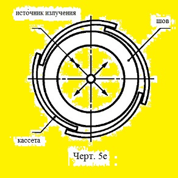

5.3. При контроле сварных соединений по черт.5е (панорамное просвечивание)отношение внутреннего диаметра к внешнему диаметру контролируемого со- единения не должно быть менее 0,8(m=d/D >= 0,8), а максимальный размер фокусного пятна (Фкрит) источника излучения не должен быть более Kd/(2(D-d)), где К - чувствительность контроля.
Выберите класс чувствительности по ГОСТ 7512-82
класс чувствител. класс : Выбрать 1, 2 или 3
наружный диаметр D, мм : Выбрать D больше d
внутренний диаметр d, мм : Выбрать d меньше D
усиление шва h, мм : Выбрать от 0, но не более 5 мм
фокусное пятно Ф, мм : Выбрать более 0, но не более 5 мм